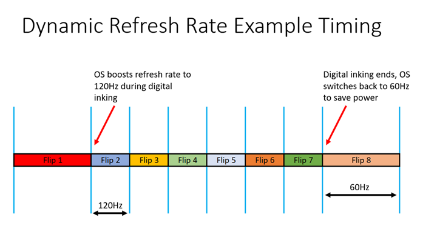
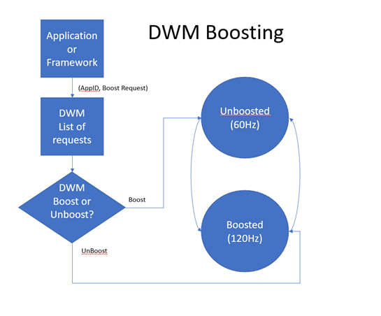

The compositor clock API offers statistics and frame rate control for presenting on-screen content smoothly, at the fastest possible cadence, and on a variety of hardware configurations. Traditionally, this has been handled by DirectX APIs. But those have strong ties to fixed refresh rate and single display configurations. For example, here's a simplified piece of pseudo-code showing how apps are typically authored to draw at the display refresh rate.
void GameLoop()
{
CreateRenderingObjects();
auto pSwapChain = CreateSwapChain();
while (pSwapChain->WaitForVerticalBlank())
{
ProcessInput();
RenderFrame(pSwapChain);
pSwapChain->Present();
}
}
In this type of loop, the assumption is that there's a single vertical blank (vblank) cadence. It's not clear what the application should do if its window is straddling two monitors whose scan-out is out of phase, or that have different frequencies altogether. In fact, the DXGI swapchain API always uses the cadence of the primary monitor, regardless of what window the application is displayed on. That causes problems for applications that want smooth presentation on all monitors. One real-world example is video playback on a secondary monitor that has a different refresh than the primary; a scenario that's existed since multiple monitors were introduced; and it disproportionately affects gamers, who tend to have a 60Hz monitor for secondary UI, and a much higher frequency (144+Hz) monitor for games.
The second common problem is that of adjusting frame rate based on machine performance. This is typical for video playback applications, which want to know whether the video frames are being seen by the user at the expected time, or whether glitches are making the presentation uneven, in the hopes of adjusting the presentation for better performance. For example, a video streaming service might switch to a lower-quality stream if the machine isn't capable of sustaining the desired frame rate at the highest quality. This, too, is handled by DXGI APIs, and is, therefore, affected by the same architectural and API exposure limitation.
Lastly, the API offers applications the opportunity to participate in a new frame rate boosting feature called Dynamic Refresh Rate, whereby the system runs at a relatively low refresh rate for normal operations—for example, 60Hz—but it speeds up to a higher frequency—for example, 120Hz—when an application performs certain latency-sensitive operations, such as inking with a stylus, or touch-panning. The boost feature exists because running at the high frequency 100% of the time is prohibitive from a power consumption point of view. At the same time, because of the same limitations of the DXGI API, switching the refresh rate of the display at arbitrary times is normally expensive, involving broadcasting mode change notifications to all applications, and the costs of all those applications running code to respond to the change. Therefore, the refresh rate boost feature performs a light-weight configuration change that doesn't issue any notifications, but, consequently, must be abstracted from most application, which continue to believe that the system is running at the lower frequency. This virtualization works by issuing applications only every other vblank, or every three vblanks, or any other integer interval, so that the application sees an effective refresh rate that is an integer fraction of the real frequency. This allows the existing vblank mechanism to be used at no extra cost to generate a perfectly regular lower frequency. The aligned vblank is represented by a dynamic refresh rate mode in the operating system (OS), such as 60Hz/120Hz. Note that, consequently, the boost feature works only to boost up to a higher frequency, never to a lower one, as it's not equally cheap to insert artificial vblanks as it is to ignore real vblanks.
The compositor clock API allows your application not only to request that the system enter or leave the boost mode, but also to observe the true refresh rate when in that mode, so that you can present content at the higher frequency.
There are three parts to the API. The first offers a display-independent heartbeat for applications that want to present at frame rate on multiple monitors. The second enables applications to request a frequency boost with Dynamic Refresh Rate. The third offers statistics about the behavior of the system composition engine, separated for each individual display.
Each part of the API influences or observes the work cycle of the System Compositor. This work cycle is a regular cadence that produces one Compositor Frame per cycle. That cycle may or may not be aligned to display vblanks, depending on system workload, number of displays, and other factors.
The purpose of this signal is to replace usage of the IDXGIOutput::WaitForVBlank method, while providing higher flexibility in different refresh rates, and simplifying usage patterns for developers. As with WaitForVBlank, the system needs to know whether an application is waiting for this signal or not, so that when no applications are waiting the system can direct the video card to turn off the vertical blank interrupt.
This is critical for power management, thus restricting the architecture of the API to be a wait function call, rather than accepting or returning an event (the graphics system can't determine whether or not it's being waited on). At this low level, applications are expected to use this API to control rendering threads, separate from general-purpose UI threads, similar to how IDXGIOutput::WaitForVBlank is traditionally used.
As mentioned in the overview, there are several aspects that compositor clock can accommodate for that WaitForVBlank can't.
In general, it's expected many applications will want to stay synchronized with the compositor clock to best time their frames; but some exceptions might include Media frameworks, and games that need to wake on the vertical blank of a specific display.
Applications currently wake at every vertical blank through DXGI's mechanism, but often have other events for which they need to wake as well. Rather than handling these events separately, the compositor clock can take handles for multiple events, and signal on the next frame and whenever the events fire. The application can then wake from one signal, knowing the event that caused it to awaken.
The compositor clock will always wake at the vertical blank of a monitor, or on another timer. When the Compositor is asleep, but the display is still updating, this signal will still be fired at the vblank of the Primary display.
void GameLoop(HANDLE hQuitGameEvent)
{
DWORD waitResult;
CreateRenderingObjects();
auto pSwapChain = CreateSwapChain();
do
{
// Do all of the work for a single frame
ProcessInput();
RenderFrame(pSwapChain);
pSwapChain->Present();
// Wait for the compositor heartbeat before starting a new frame
waitResult = DCompositionWaitForCompositorClock(1, &hQuitGameEvent, INFINITE);
// If we get WAIT_RESULT_0+count it means the compositor clock ticked,
// and we should render another frame. Our count is one, as we're
// passing only one extra handle. Otherwise, either we got a failure or
// another thread signaled our "quit" event, and in either case we want
// to exit the loop
} while (waitResult == WAIT_OBJECT_0 + 1);
}
When the source of the compositor clock supports Dynamic Refresh Rate (that feature is turned on in advanced display settings; only usable on variable refresh rate displays with support drivers) the system will be able to dynamically switch between two rates. There is an unboosted mode, which will typically be 60Hz, and a boosted rate which typically is 2x higher at 120Hz. This higher refresh rate should be used to enhance latency-sensitive content, such as digital inking. The diagram below shows how the system switches between running at a base 60Hz rate (flip 1) and then for 6 frames (2-7) with digital ink timed at 120Hz. Finally, once the digital ink is no longer updating, the system switches back to a 60Hz mode.
Here's an illustration of dynamic framerate for boosting.

And here's how DWM handles boost requests.

If an application requesting a Boost is terminated, then the boost requests from the app will also be terminated. Applications that are still active with multiple boost requests can check the reference count to determine how many times to unboost. Boosting calls are completely compatible, even if the system isn't in Dynamic Refresh Rate mode, where the boost multiplier would be 1x.
This sample processes WM_TOUCH to boost the refresh rate whenever this application receives touch input, with the intent of providing a smoother, high-frequency touch panning experience. A more sophisticated application might perform gesture recognition first, and boost only if a pan is detected.
int g_activeTouchPoints = 0;
LRESULT OnTouch(HWND hWnd, WPARAM wParam, LPARAM lParam)
{
LRESULT result = 0;
UINT inputCount = LOWORD(wParam);
auto hTouchInput = reinterpret_cast<HTOUCHINPUT>(lParam);
// Allocate room for touch data (assume throwing new)
auto pInputs = new TOUCHINPUT[inputCount];
if (GetTouchInputInfo(hTouchInput, inputCount, pInputs, sizeof(TOUCHINPUT)))
{
for (int index = 0; index < inputCount; index++)
{
auto& touchInput = pInputs[index];
// The first time we receive a touch down, boost the compositor
// clock so we do our stuff at high frequency. Once the last touch
// up happens, return to the base frequency
if (touchInput.dwFlags & TOUCHEVENTF_DOWN)
{
if (!g_activeTouchPoints)
{
// We're going from zero to one active points -- boost
DCompositionBoostCompositorClock(true);
}
g_activeTouchPoints++;
}
else if (touchInput.dwFlags && TOUCHEVENTWF_UP)
{
g_activeTouchPoints--;
if (g_activeTouchPoints == 0)
{
DCompositionBoostCompositorClock(false);
}
}
// Perform other normal touch processing here...
}
// We handled the window message; close the handle
CloseTouchInputHandle(hTouchInput);
}
else
{
// We couldn't handle the message; forward it to the system
result = DefWindowProc(hWnd, WM_TOUCH, wParam, lParam);
}
delete[] pInputs;
return result;
}
[!NOTE] We expect applications to use the frame statistics feature mostly for telemetry, not for adjusting content.
Windows applications often submit content to the compositor that is shown in a variety of locations across display adaptors and screens. We don't always render to a screen, which is why in this API we use targets. Rather than relying on a single statistic to represent when a frame hit the screen, DCompositionGetTargetStatistics offers frame statistics for every Compositor Frame as it hits every target. The compositor does work on a regular basis, which may occur on a vblank or it may not. This means that if a display is duplicated, or a content is shown in multiple places, then the application, framework, or telemetry can account for all of it. However, these compositor frames will provide incomplete information on frames that are not composed, such as in iflip (independent flip) on a swapchain.
As an example of usage, the new Media Foundation infrastructure based on the composition swapchain relies on both DCompositionGetStatistics and DCompositionGetTargetStatistics to make determinations of composed presentation quality through telemetry. In addition to this API, they will call a separate API when their frames are in iflip and are not going to the compositor.
For certain usages, we will expect applications to use IDCompositionDevice::GetFrameStatistics to receive an estimate of when the next compositor frame will come by checking DCOMPOSITION_FRAME_STATISTICS::nextEstimatedFrameTime.
First the application will query the last frame pertaining to the status of the presentation of the frame through different phrases. The application will either have an existing frameId provided by the composition swapchain, or future interfaces that it wants information about, or it can call DCompositionGetFrameId to retrieve the most recent COMPOSITION_FRAME_ID of the specified COMPOSITION_FRAME_ID_TYPE.
[!NOTE] COMPOSITION_Frame_ID is monotonically increasing; so previous compositor frames can be inferred from it.
Next, the application will query for basic information about the composition frame, and a list of targetIds that are part of the frame, by calling DCompositionGetStatistics. Finally, if the application requires per-target information, then it will use DCompositionGetTargetStatistics to retrieve information for the specified frameId and targetId.
The following example shows a rolling collection of frame statistics from the API, which are then summarized in the TargetFrameRate function to deduce what the framerate was over a set of frames. Again, this kind of code is expected in telemetry or in frameworks, rather than in an application.
class FrameStatisticsCollector
{
private:
// Collect at most 4 target monitors
static constexpr UINT sc_maxTargetCount = 4;
struct CompositionTargetStats
{
COMPOSITION_FRAME_ID frameId;
COMPOSITION_FRAME_STATS frameStats;
COMPOSITION_TARGET_ID targetId;
COMPOSITION_TARGET_STATS targetStats;
};
UINT64 m_qpcFrequency;
COMPOSITION_FRAME_ID m_lastCollectedFrameId = 0;
std::vector<CompositionTargetStats> m_targetStats;
public:
FrameStatisticsCollector()
{
QueryPerformanceFrequency(&m_qpcFrequency);
m_lastCollectedFrameId = CurrentFrameId();
}
// Queries the compositor clock statistics API to determine the last frame
// completed by the composition engine
COMPOSITION_FRAME_ID CurrentFrameId() const
{
COMPOSITION_FRAME_ID frameId;
if (FAILED(_DCompositionGetFrameId(frameIdType, &frameId)))
{
frameId = 0;
}
return frameId;
}
// Queries the system to get information about the latest composition frames
void CollectStats()
{
COMPOSITION_FRAME_ID currentFrameId = CurrentFrameId(COMPOSITION_FRAME_ID_COMPLETED);
while (m_active && (currentFrameId > m_endFrameId))
{
auto newEndFrameId = m_endFrameId + 1;
COMPOSITION_FRAME_STATS frameStats = {};
COMPOSITION_TARGET_ID targetIds[sc_maxTargetCount] = {};
UINT targetCount;
hr = _DCompositionGetStatistics(newEndFrameId,
&frameStats,
_countof(targetIds),
targetIds,
&targetCount);
if (SUCCEEDED(hr))
{
// We track up to sc_maxTargetCount targets per frame
targetCount = min<UINT>(targetCount, _countof(targetIds));
for (UINT uIndex = 0; uIndex < targetCount; uIndex++)
{
COMPOSITION_TARGET_STATS targetStats = {};
hr = DCompositionGetTargetStatistics(newEndFrameId,
&targetIds[uIndex],
&targetStats);
if (SUCCEEDED(hr))
{
CompositionTargetStats compTargetStats = { newEndFrameId,
frameStats,
targetIds[uIndex],
targetStats };
m_compTargetStats.push_back(compTargetStats);
}
else
{
m_active = false;
}
}
m_endFrameId = newEndFrameId;
}
else
{
m_active = false;
}
}
}
// Compute the frame rate for the given composition target in frames per
// second, over the specified frame interval based on historical statistics
// data
float TargetFrameRate(
_const COMPOSITION_TARGET_ID& targetId,
COMPOSITION_FRAME_ID beginFrameId,
COMPOSITION_FRAME_ID endFrameId) const
{
UINT frameCount = 0;
UINT64 beginTime = 0;
UINT64 endTime = 0;
for (const auto& stats : m_compTargetStats)
{
if ((stats.frameId >= beginFrameId) && (stats.frameId <= endFrameId))
{
if (stats.frameId == beginFrameId)
{
beginTime = stats.frameStats.startTime;
}
if (stats.frameId == endFrameId)
{
endTime = stats.frameStats.startTime +
stats.frameStats.framePeriod;
}
if ((stats.targetId == targetId) &&
(stats.targetStats.presentTime != 0))
{
frameCount++;
}
}
}
if ((beginTime != 0) &&
(endTime != 0) &&
(endTime > beginTime) &&
(frameCount != 0))
{
auto seconds = static_cast<float>(endTime - beginTime) /
static_cast<float>(m_qpcFrequency);
return static_cast<float>(frameCount) / seconds;
}
else
{
return 0.0f;
}
}
};